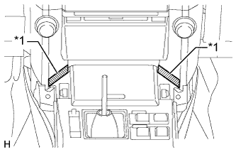

DISPLAY AND NAVIGATION ASSEMBLY > INSTALLATION |
| 1. INSTALL HAZARD WARNING SIGNAL SWITCH ASSEMBLY |
Attach the 2 claws to install the switch.
| 2. INSTALL CENTER INSTRUMENT PANEL REGISTER ASSEMBLY |
 |
Attach the 8 claws to install the center instrument panel register.
| 3. INSTALL NO. 2 RADIO BRACKET |
Install the No. 2 radio bracket with the 3 bolts.
| 4. INSTALL NO. 1 RADIO BRACKET |
Install the No. 1 radio bracket with the 3 bolts.
Attach the claw and clamp to install the connector.
| 5. INSTALL DISPLAY AND NAVIGATION MODULE DISPLAY |
Connect the connectors.
 |
Insert the display and navigation module display and attach the 7 clips on the backside of the display and navigation module display.
Install the display and navigation module display with the 4 bolts.
| 6. INSTALL LOWER INSTRUMENT PANEL FINISH PANEL ASSEMBLY |
Connect each connector and cooler thermistor.
Attach the 4 clips to install the lower instrument panel finish panel.
| 7. INSTALL CENTER INSTRUMENT CLUSTER FINISH PANEL GARNISH |
 |
Attach the 13 clips to install the center instrument cluster finish panel garnish together with the instrument cluster finish panel garnish.
| *1 | Center Instrument Cluster Finish Panel Garnish |
| *2 | Instrument Cluster Finish Panel Garnish |
| 8. INSTALL NO. 2 INSTRUMENT PANEL REGISTER ASSEMBLY |
Attach the 8 clips to install the No. 2 instrument panel register.
| 9. INSTALL RADIO RECEIVER ASSEMBLY WITH BRACKET |
w/o Navigation System:
Connect the connectors.
 |
Insert the radio receiver to attach the 6 clips and rib on its backside.
Install the radio receiver with the 4 bolts.
w/ Navigation System:
Connect the connectors.
 |
Insert the radio receiver to attach the 6 clips and 3 ribs on its backside.
Install the radio receiver with the 4 bolts.
| 10. INSTALL UPPER CONSOLE PANEL SUB-ASSEMBLY |
|  |
Put protective tape around the upper console panel.
| *1 | Protective Tape |
 |
Using a moulding remover, detach the 7 clips.
Disconnect each connector and move the upper console panel in the direction of the arrow to remove it.
| 11. INSTALL SHIFT LEVER KNOB SUB-ASSEMBLY |
 |
Install the shift lever knob and twist it in the direction indicated by the arrow.
| 12. INSTALL FRONT CONSOLE UPPER PANEL GARNISH |
Attach the 2 clips to install the front upper console panel garnish.
| 13. INSTALL INSTRUMENT PANEL FINISH PANEL END RH |
Attach the 11 clips to install the instrument panel finish panel end.
| 14. INSTALL INSTRUMENT PANEL FINISH PANEL END LH |
Attach the 11 clips to install the instrument panel finish panel end.
| 15. CONNECT CABLE TO NEGATIVE BATTERY TERMINAL |